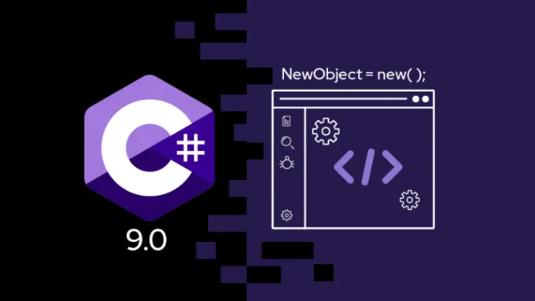
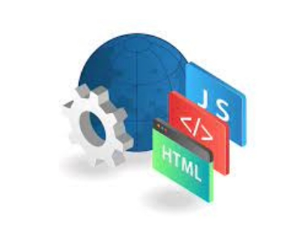

"RingBook" est un projet amateur conçu en classe, développé en langage C#. Il permet d'enregistrer les informations détaillées des combattants et d'organiser leurs combats. Les utilisateurs peuvent également parier sur les combats à venir, ajoutant ainsi une dimension interactive au programme. Enfin, le programme affiche les résultats en temps réel, offrant une expérience immersive aux passionnés de boxe anglaise.
"IMS Games Shop" est une boutique locale fictive. Ce projet met en avant une sélection de packs de jeux vidéo en ligne ainsi qu'une gamme complète de matériel informatique de qualité. Développée lors d'un travail pratique en classe, cette boutique en ligne offre une expérience conceptuelle de shopping avec des produits imaginaires. Plongez virtuellement dans l'univers du gaming avec IMS Games Shop, un projet étudiant dédié à l'exploration des concepts liés au commerce en ligne.

Durant ma première année d'études, j'ai consacré beaucoup de temps et d'efforts à divers projets et exercices qui ont été une partie essentielle de mon parcours académique. Ces projets et exercices m'ont permis de mettre en pratique les connaissances théoriques acquises en classe et de développer mes compétences dans différents domaines.
Je suis fier de partager avec vous le fruit de ce travail acharné. Vous trouverez ci-dessous un lien vers mes projets et exercices de première année. Chacun d'entre eux représente un défi unique que j'ai relevé avec détermination et créativité. Ces réalisations témoignent de mon engagement envers mes études et de ma passion pour l'apprentissage.
Je suis fier de partager avec vous le fruit de ce travail acharné. Vous trouverez ci-dessous un lien vers mes projets et exercices de première année. Chacun d'entre eux représente un défi unique que j'ai relevé avec détermination et créativité. Ces réalisations témoignent de mon engagement envers mes études et de ma passion pour l'apprentissage.

"Le projet Android Studio "rdvGSB" vise à développer une application de prise de rendez-vous dédiée aux commerciaux. L'objectif principal est de faciliter la planification et la gestion des rendez-vous entre les commerciaux et les professionnels. L'application offrira une interface conviviale permettant aux utilisateurs de créer, modifier et visualiser leurs rendez-vous de manière efficace.

Développement d'une application permettant la gestion des rendez-vous médicaux et l'enregistrement des données médicales des patients. Cette application offre une interface intuitive pour les médecins et le personnel administratif afin de planifier les rendez-vous, d'accéder aux antécédents médicaux des patients, et de saisir de nouvelles données médicales lors des consultations. Elle intègre des fonctionnalités de sécurité pour garantir la confidentialité des informations des patients et des outils de sauvegarde pour assurer la fiabilité du système.
Durant ma première année d'études, j'ai consacré beaucoup de temps et d'efforts à divers projets et exercices qui ont été une partie essentielle de mon parcours académique. Ces projets et exercices m'ont permis de mettre en pratique les connaissances théoriques acquises en classe et de développer mes compétences dans différents domaines.
Je remercie chaleureusement tous mes professeurs pour leur soutien et leur enseignement précieux tout au long de mon parcours académique. En particulier, je souhaite exprimer ma gratitude envers Monsieur Stephan ADALIZ et Madame Valery EXPOSITO pour leur patience et leur aide constantes. Leur dévouement m'a été d'une grande aide.
De plus, je suis reconnaissant envers tous mes professeurs pour leur expertise et leur passion qui m'ont permis de progresser. J'ai compilé tous les petits projets réalisés au cours de l'année dans un dossier accessible via ce lien. Ces projets sont le fruit de mes efforts et de l'inspiration que j'ai puisée auprès de mes professeurs.
Merci encore à tous mes professeurs pour leur contribution à mon éducation. Je suis reconnaissant d'avoir eu l'opportunité d'apprendre à leurs côtés et je suis impatient d'appliquer les connaissances acquises dans mes projets futurs.